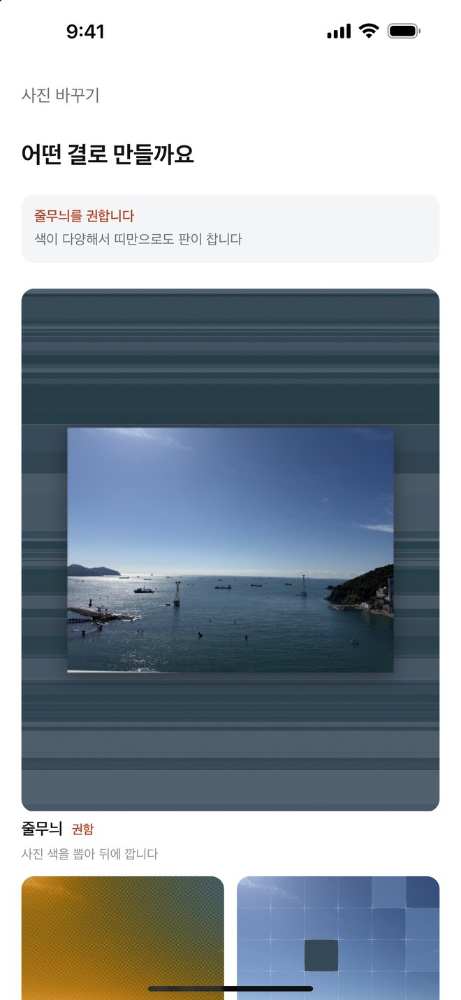
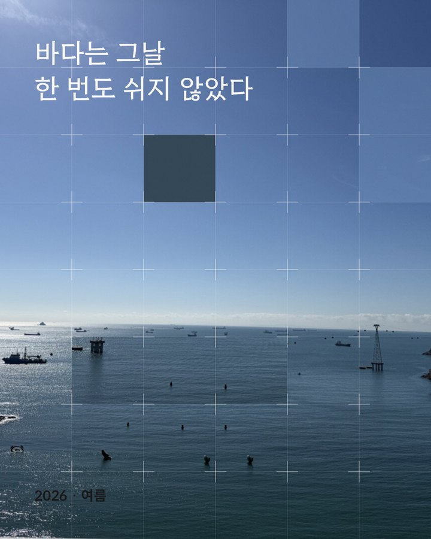
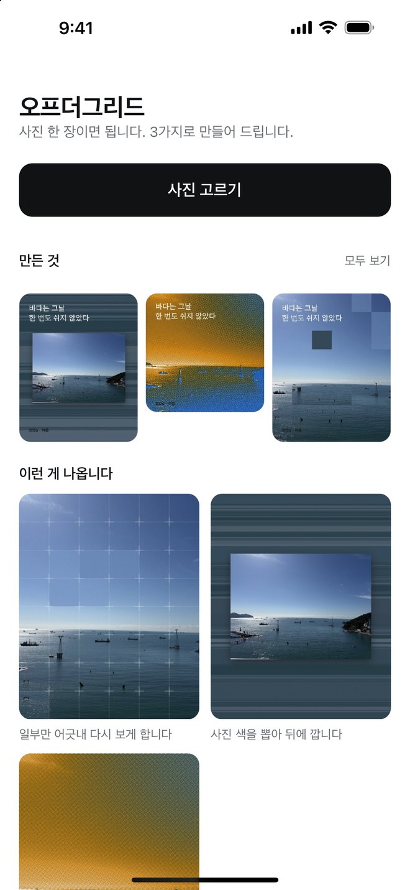
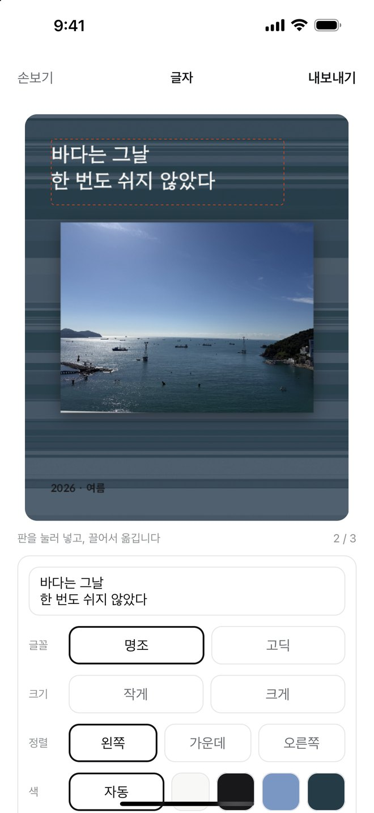
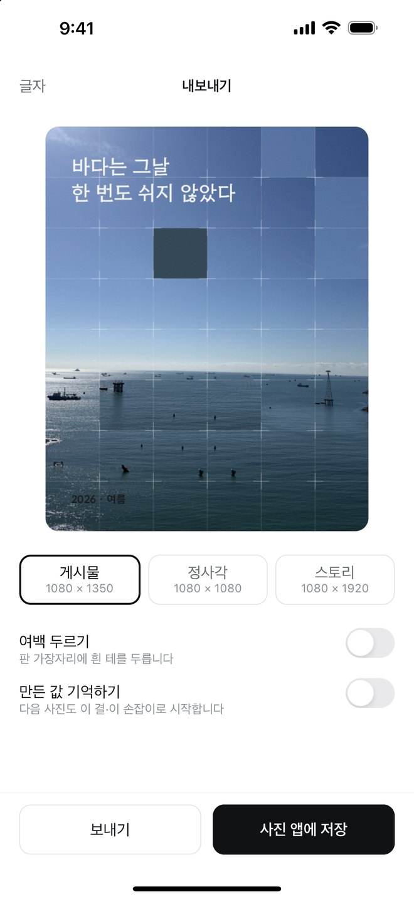
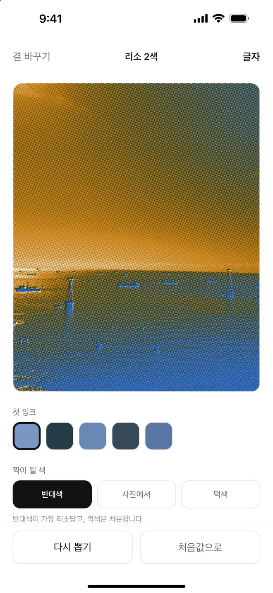

사진으로 포스터 · iPhone
사진 한 장이면,
올릴 만한 포스터가 나옵니다.
빈 화면에 손잡이를 늘어놓지 않습니다. 사진을 먼저 읽고 어울리는 결을 권합니다. 권한 것을 그대로 써도 한 장이 나옵니다.
무료 · 가입 없음 · 인터넷 연결 없음


하는 일
고르고, 권하는 걸 보고, 내보내면 끝
그냥 올리는 것보다 나은 한 장이 20초 안에 나오게 만들었습니다.
1
사진을 고릅니다
iPhone 의 사진 선택기로 한 장만. 보관함은 열지 않습니다.

2
앱이 결을 권합니다
사진의 색과 디테일을 읽고, 어울리는 결을 이유 한 줄과 함께.
3
글자를 얹습니다
판 아무 데나 눌러 넣고 끌어 옮깁니다. 셋까지.

4
판을 골라 내보냅니다
게시물 1080 × 1350, 정사각 1080 × 1080, 스토리 1080 × 1920.

결 셋
필터가 아니라 결입니다
같은 결이라도 다시 뽑으면 배치가 매번 달라집니다. 손잡이는 결마다 다섯 개 이하.
결 하나
격자 어긋내기
사진을 격자로 나누고 한 칸만 비켜 둡니다. 눈이 그 자리에서 한 번 멈춥니다. 어긋낼 칸은 디테일이 많은 곳에서, 색면은 가장 밋밋한 곳에서 고릅니다.
일부만 어긋내 다시 보게 합니다
결 둘
색 줄무늬
사진에서 뽑은 색으로 띠를 만들어 뒤에 깔고, 사진은 그 위에 한 장으로 올립니다. 색이 다양한 사진일수록 판이 꽉 찹니다.
사진 색을 뽑아 뒤에 깝니다
결 셋
리소 2색
두 가지 잉크로 찍은 인쇄물처럼 망점으로 다시 그립니다. 첫 잉크는 사진에서 고르고, 짝은 반대색이나 먹색으로.
반대색이 가장 리소답고, 먹색은 차분합니다

약속
이 다섯을 깨는 기능은 넣지 않습니다
- 계정이 없습니다가입도 로그인도 없습니다. 깔면 바로 씁니다.
- 기기 안에서 끝납니다서버도 클라우드도 없습니다. 인터넷에 접속하지 않습니다.
- 보관함을 읽지 않습니다시스템 사진 선택기로 고른 한 장만 받습니다.
- 원본 사진은 안 남깁니다앱 안 「만든 것」에 쌓이는 건 내보낸 포스터뿐입니다.
- 재촉하지 않습니다알림도, 배지도, 구독 화면도 없습니다.
자주 묻는 것
궁금한 것
권한을 왜 안 묻나요?
사진은 iPhone 의 시스템 선택기로 고른 한 장만 들어옵니다. 앱이 보관함을 열어 볼 일이 없습니다.
저장할 때만 묻는 권한은 무엇인가요?
사진 앱에 넣는 권한(추가 전용)입니다. 사진 앱을 읽지는 않습니다.
만든 포스터는 어디에 있나요?
사진 앱과 앱 안 「만든 것」 양쪽에 있습니다. 「만든 것」에서 한 장씩 지우거나 전부 비울 수 있습니다.
같은 사진으로 다시 만들 수 있나요?
됩니다. 「만든 값 기억하기」를 켜면 다음 사진도 같은 결, 같은 손잡이로 시작합니다.
필터나 보정은 없나요?
없습니다. 포스터를 만드는 앱입니다.
App Store 에 곧 올라갑니다
안 되는 것, 바라는 것이 있으면 먼저 보내 주세요. 출시되면 이 자리에 받기 버튼이 생깁니다.